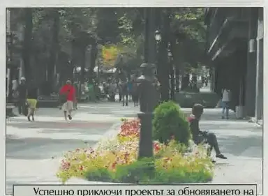
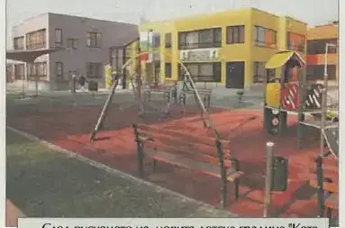
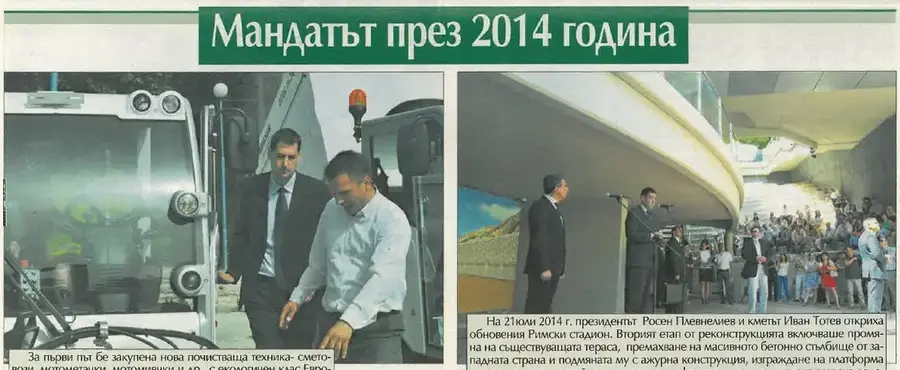
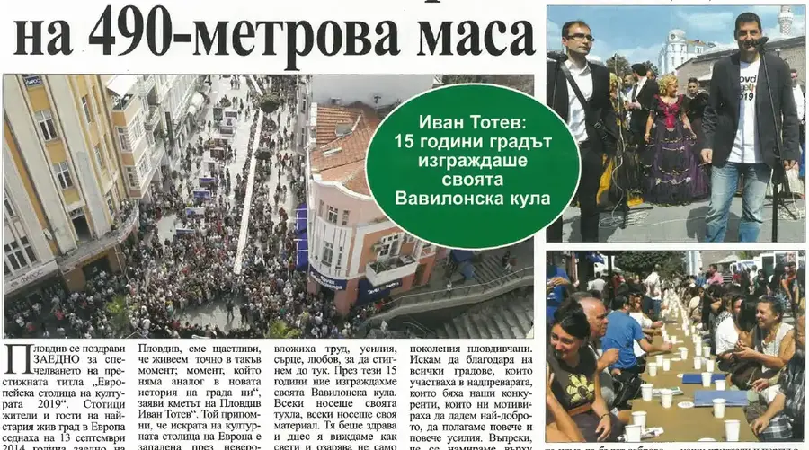
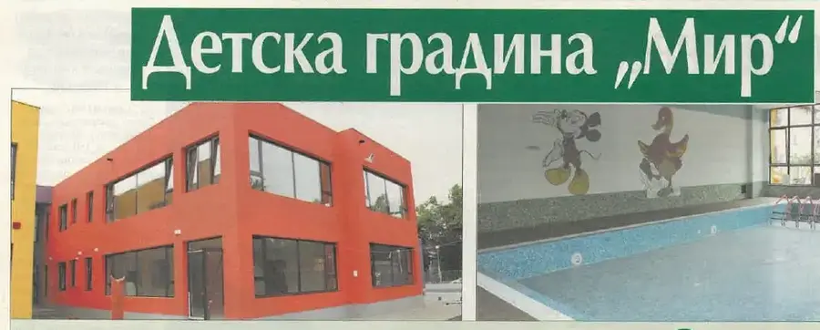

×
В навечерието на Съединението журито обяви: Пловдив е Европейска столица на културата 2019.
Моментът, който се случва един път. Първият български град с титлата — завинаги.
подробностите — на мястото им →Лентата и обявяването: най-дългата пешеходна зона в Европа.
подробностите — на мястото им →Общината, „Америка за България“ и Министерството на културата си подават ръка над булеварда.
подробностите — на мястото им →Всичко на едно място, по реда на случването. Щракни албум — разгъва се тук, без да напускаш годината. Събитията от общинския вестник отварят страницата-източник в четеца. Записите от вестника са подбраните — кадрите и текстовете им предстои да бъдат подменени с по-добри, а някои ще се слеят с разказите по темите.

стр. 4Успешно приключи проектът за обновяването на Малката Главна до Пешеходния мост. Така Пловдив стана градът с най-дългата пешеходна зона в Европа – 1750 метра.
брой 4 · август 2015 · стр. 4 — отвори страницата →
стр. 4Пусната бе новата детска градина „Котаракът в чизми“ в район „Южен“ и детска ясла „Приказка“ в район „Тракия“. Започна и строителството на ЦДГ „Мир“ за 200 деца в район „Западен“.
брой 4 · август 2015 · стр. 4 — отвори страницата →
стр. 5На 21 юли 2014 г. президентът Росен Плевнелиев и кметът Иван Тотев откриха обновения Римски стадион. Вторият етап от реконструкцията включваше промяна на съществуващата тераса, премахване на масивното бетонно стълбище от западната страна и подмяната му с ажурна конструкция, платформа за хора в неравностойно положение, информационен център с търговска зона и модерна прожекционна зала.
брой 3 · 29 юли 2015 · стр. 5 — отвори страницата →
стр. 3Стотици жители и гости на най-стария жив град в Европа седнаха заедно на 490-метрова маса, която се простираше от Римския стадион до площад „Стефан Стамболов“, и вдигнаха наздравица за успеха и бъдещето на Пловдив след спечелването на титлата „Европейска столица на културата 2019“. „Много са малко моментите, които остават в историята на един град – този няма аналог“, заяви кметът Иван Тотев.
брой 40 · август 2018 · стр. 3 — отвори страницата →
стр. 6Началото на строежа на най-новата пловдивска детска градина „Мир“ бе дадено със символична първа копка от кмета Иван Тотев. Започната на голо поле, двуетажната сграда за близо 200 деца разполага с басейн, физкултурен салон и атрактивна цветна фасада и завършва проекта за 100 процента наличност на места за децата в Пловдив.
брой 3 · 29 юли 2015 · стр. 6 — отвори страницата →Отчет 2014 — пълният пакет — 234 файла, 7 версии на презентацията.